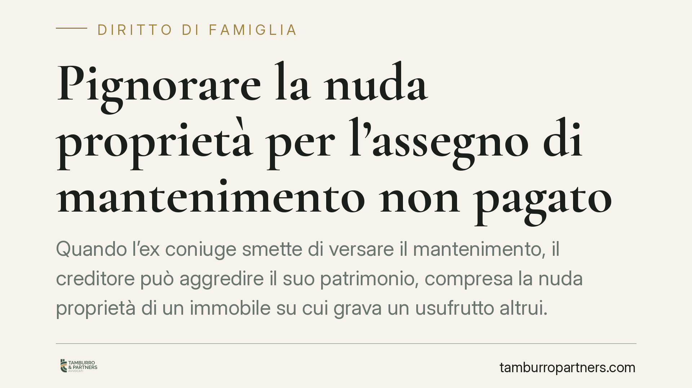

Pignorare la nuda proprietà per l'assegno di mantenimento non pagato
Quando l'ex coniuge smette di versare il mantenimento, il creditore può aggredire il suo patrimonio, compresa la nuda proprietà di un immobile su cui grava un usufrutto altrui. È un'opzione praticabile, ma con limiti economici precisi. Vediamo come funziona e cosa conviene valutare prima di avviare l'esecuzione immobiliare.

Nuda proprietà e usufrutto: due diritti distinti
La proprietà piena di un immobile può essere scomposta in due diritti reali autonomi. Il nudo proprietario è titolare del bene ma non può goderne: non lo abita, non lo affitta, non ne percepisce i frutti. L'usufruttuario, invece, ha il diritto di usare l'immobile e trarne utilità (ad esempio i canoni di locazione) per la durata dell'usufrutto, di regola fino alla propria morte.
Alla cessazione dell'usufrutto i due diritti si ricongiungono: il nudo proprietario acquista automaticamente la piena proprietà, senza pagare nulla e senza nuovi atti. È proprio questa prospettiva a dare valore economico alla nuda proprietà.
Il quadro normativo
L'esecuzione forzata presuppone un titolo esecutivo (art. 474 c.p.c.): per gli obblighi di mantenimento è tipicamente la sentenza di separazione o divorzio, o il verbale di conciliazione. Al titolo deve seguire la notifica dell'atto di precetto (art. 480 c.p.c.), intimazione ad adempiere entro dieci giorni, decorsi i quali si può procedere al pignoramento.
La nuda proprietà è un diritto patrimoniale nella titolarità del debitore e, come tale, è pignorabile e vendibile all'asta. La presenza di un usufrutto in capo a un terzo non impedisce l'espropriazione del solo diritto residuo dell'ex coniuge.
Sul punto la giurisprudenza di legittimità è consolidata nel ritenere autonomamente aggredibile la nuda proprietà (orientamento della Cassazione Civile; estremi puntuali *da verificare* prima della citazione in atti).
Cosa cambia in concreto
Il pignoramento non colpisce l'usufrutto. Chi acquista all'asta compra la sola nuda proprietà: subentra al debitore nella stessa posizione, ma deve attendere la fine dell'usufrutto per godere del bene. L'usufruttuario continua ad abitare o affittare l'immobile: il suo diritto sopravvive alla vendita ed è opponibile all'aggiudicatario.
Questo incide sul risultato economico. Il valore della nuda proprietà è calcolato per differenza rispetto al valore pieno, in funzione dell'età dell'usufruttuario secondo i coefficienti di legge: più giovane è l'usufruttuario, più basso è il prezzo base d'asta. Il bene attira quindi meno acquirenti e realizza somme contenute rispetto al credito.
Per il creditore da mantenimento significa che l'esecuzione immobiliare sulla sola nuda proprietà può rivelarsi lenta e poco satisfattiva. Non è una strada da scartare, ma raramente è la prima da percorrere.
Le alternative più rapide
Prima dell'aggressione immobiliare vanno considerate forme di recupero più immediate.
Il pignoramento presso terzi consente di aggredire stipendio, pensione o saldi di conto corrente del debitore. In materia di mantenimento, inoltre, il giudice può ordinare al datore di lavoro o all'ente pagatore di versare direttamente al creditore le somme dovute: strumento previsto dall'art. 156, commi 4-6, c.c. per la separazione e dall'art. 8 della L. 898/1970 per il divorzio.
Si tratta di canali spesso più veloci e con costi procedurali inferiori rispetto alla vendita all'asta di un diritto già decurtato dall'usufrutto.
Cosa fare in concreto
- Verifica il titolo esecutivo: accertati che la sentenza o il verbale rechi gli importi dovuti e sia munito di formula esecutiva.
- Notifica il precetto ex art. 480 c.p.c. e attendi i dieci giorni prima di procedere.
- Richiedi una visura catastale e ipotecaria aggiornata per accertare la reale titolarità del diritto e l'esistenza dell'usufrutto e di eventuali gravami anteriori.
- Valuta in via preliminare le alternative di recupero più rapide (pignoramento presso terzi, conti correnti, ordine di pagamento diretto) prima di avviare l'esecuzione immobiliare.
- Stima il prezzo base della nuda proprietà in base all'età dell'usufruttuario, per verificare se il ricavato atteso giustifica i tempi e i costi dell'asta.
Disclaimer
Contributo informativo a cura di Tamburro & Partners Avvocati - Avv. Giuseppe Tamburro. Non costituisce parere legale.
Ogni famiglia ha il suo equilibrio.
Separazione, divorzio, affidamento, assegno: se vuoi un confronto riservato su una specifica situazione, scrivi allo studio. Ti rispondiamo entro un giorno lavorativo.